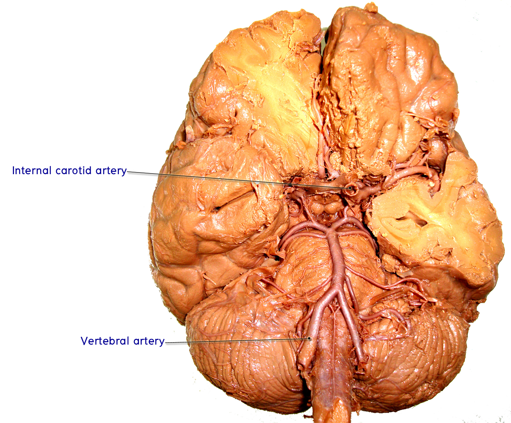
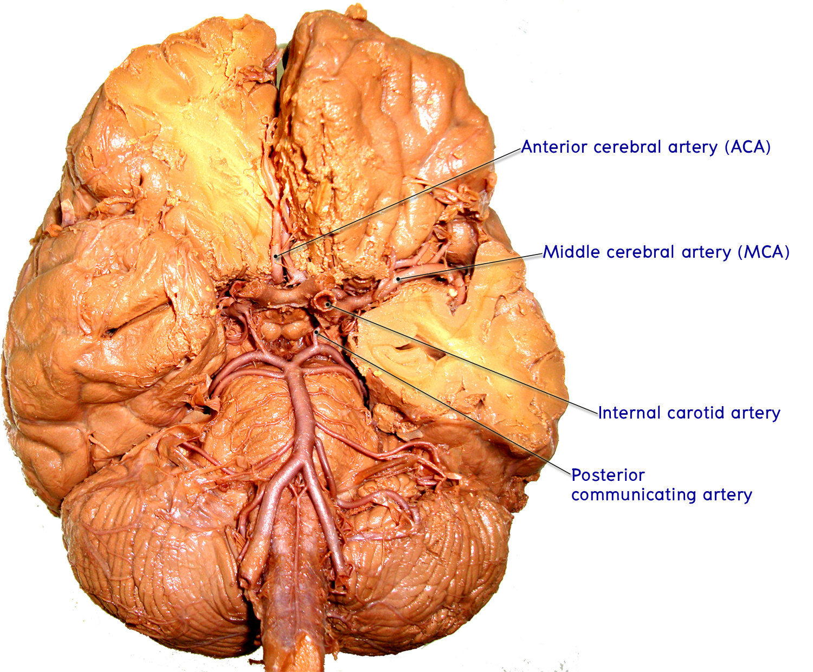

Cerebral blood supply
ศึกษาจากรูปภาพใน atlas และ สมองดอง ให้นักศึกษาชี้แสดงหลอดเลือดและแขนงที่สำคัญที่มาเลี้ยงสมองทั้งสองระบบ คือ carotid system และ vertebro-basilar system
1. Carotid system
- Cerebral segment of internal carotid artery
ให้นักศึกษานำสมองทั้งก้อน (whole brain) ที่ยังมีโครงสร้างของหลอดเลือดแดงติดอยู่ครบ มาศึกษาจากด้าน inferior surface โดยให้ชี้แสดงหลอดเลือดแดงแขนงต่าง ๆ ของ internal carotid artery

- Cerebral segment of internal carotid artery จะเห็นเป็นตอของหลอดเลือดแดงขนาดใหญ่ วางอยู่ทางด้าน lateral ต่อ optic nerve
- Anterior cerebral artery เป็นแขนงหนึ่งที่แตกจาก internal carotid artery ซึ่งทอดไปอยู่ superior ต่อ optic nerve แล้วโค้งต่อไปด้านหน้าเพื่อแทรกเข้าไปใน longitudinal fissure ให้ตามหลอดเลือดนี้ไปทางด้านหน้าจะพบว่ามีหลอดเลือดสั้น ๆ เชื่อมระหว่าง anterior cerebral artery ทั้งสองข้าง ซึ่งก็คือ Anterior communicating artery
- Middle cerebral artery เป็นแขนงใหญ่ที่เป็น terminal branch ของ internal carotid artery ซึ่งจะทอดไปทางด้าน lateral โดยลอดเข้าไประหว่าง frontal กับ temporal lobes เพื่อทอดต่อไปบน insular lobe
- ให้นักศึกษาแหวก inferior surface ของ temporal lobe เบา ๆ เพื่อให้เห็นแขนงของ middle cerebral artery ที่ทอดต่อไปด้าน lateral
- ใช้ forcep ดึง middle cerebral artery ส่วนที่ทอดไปด้าน lateral นี้เบา ๆ จะสังเกตเห็นว่ามีแขนงหลอดเลือดเล็ก ๆ ปักเข้าไปในเนื้อสมอง หลอดเลือดเหล่านี้คือ lenticulostriate arteries ซึ่งเข้าไปเลี้ยง lentiform nucleus และ internal capsule
- Posterior communicating artery เป็นแขนงของ internal carotid artery ที่แยกออกไปทางด้านหลัง ทอดข้าม optic tract และไปเชื่อมต่อกับ posterior cerebral artery ที่เป็น terminal branch ของ basilar artery
- Anterior choroidal artery เป็นแขนงเล็ก ๆ ที่ทอดตาม optic tract เข้าไป (นักศึกษาอาจต้องแหวกบริเวณ uncus ของ temporal lobe เล็กน้อยเพื่อให้เห็นได้ชัดขึ้น)
